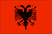
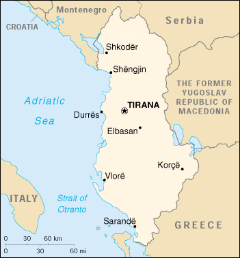

{kind=link}


| Albania |  |
|
|  | |
| Introduction |
Background: In 1990 Albania ended 44 years of xenophobic communist rule and established a multiparty democracy. The transition has proven difficult as corrupt governments have tried to deal with severe unemployment, the collapse of a fraudulent nationwide investment scheme, widespread gangsterism, and massive refugee influxes from neighboring Kosovo.
| Geography |
Location: Southeastern Europe, bordering the Adriatic Sea and Ionian Sea, between Greece and Serbia and Montenegro
Geographic coordinates: 41 00 N, 20 00 E
Map references: Europe
Area:
total:
28,748 sq km
land:
27,398 sq km
water:
1,350 sq km
Area - comparative: slightly smaller than Maryland
Land boundaries:
total:
720 km
border countries:
Greece 282 km, The Former Yugoslav Republic of Macedonia 151 km, Serbia and Montenegro 287 km (114 km with Serbia, 173 km with Montenegro)
Coastline: 362 km
Maritime claims:
continental shelf:
200-m depth or to the depth of exploitation
territorial sea:
12 nm
Climate: mild temperate; cool, cloudy, wet winters; hot, clear, dry summers; interior is cooler and wetter
Terrain: mostly mountains and hills; small plains along coast
Elevation extremes:
lowest point:
Adriatic Sea 0 m
highest point:
Maja e Korabit (Golem Korab) 2,753 m
Natural resources: petroleum, natural gas, coal, chromium, copper, timber, nickel, hydropower
Land use:
arable land:
21%
permanent crops:
5%
permanent pastures:
15%
forests and woodland:
38%
other:
21% (1993 est.)
Irrigated land: 3,410 sq km (1993 est.)
Natural hazards: destructive earthquakes; tsunamis occur along southwestern coast
Environment - current issues: deforestation; soil erosion; water pollution from industrial and domestic effluents
Environment - international agreements:
party to:
Biodiversity, Climate Change, Hazardous Wastes, Ozone Layer Protection, Wetlands
signed, but not ratified:
none of the selected agreements
Geography - note: strategic location along Strait of Otranto (links Adriatic Sea to Ionian Sea and Mediterranean Sea)
| People |
Population: 3,490,435 (July 2000 est.)
Age structure:
0-14 years:
30% (male 545,329; female 507,589)
15-64 years:
63% (male 1,056,583; female 1,141,664)
65 years and over:
7% (male 104,086; female 135,184) (2000 est.)
Population growth rate: 0.26% (2000 est.)
Birth rate: 19.47 births/1,000 population (2000 est.)
Death rate: 6.5 deaths/1,000 population (2000 est.)
Net migration rate: -10.36 migrant(s)/1,000 population (2000 est.)
Sex ratio:
at birth:
1.08 male(s)/female
under 15 years:
1.07 male(s)/female
15-64 years:
0.93 male(s)/female
65 years and over:
0.77 male(s)/female
total population:
0.96 male(s)/female (2000 est.)
Infant mortality rate: 41.33 deaths/1,000 live births (2000 est.)
Life expectancy at birth:
total population:
71.57 years
male:
68.75 years
female:
74.59 years (2000 est.)
Total fertility rate: 2.37 children born/woman (2000 est.)
Nationality:
noun:
Albanian(s)
adjective:
Albanian
Ethnic groups:
Albanian 95%, Greeks 3%, other 2% (Vlachs, Gypsies, Serbs, and Bulgarians) (1989 est.)
note:
in 1989, other estimates of the Greek population ranged from 1% (official Albanian statistics) to 12% (from a Greek organization)
Religions:
Muslim 70%, Albanian Orthodox 20%, Roman Catholic 10%
note:
all mosques and churches were closed in 1967 and religious observances prohibited; in November 1990, Albania began allowing private religious practice
Languages: Albanian (Tosk is the official dialect), Greek
Literacy:
definition:
age 9 and over can read and write
total population:
93% (1997 est.)
male:
NA%
female:
NA%
| Government |
Country name:
conventional long form:
Republic of Albania
conventional short form:
Albania
local long form:
Republika e Shqiperise
local short form:
Shqiperia
former:
People's Socialist Republic of Albania
Data code: AL
Government type: emerging democracy
Capital: Tirana
Administrative divisions:
36 districts (rrethe, singular - rreth) and 1 municipality* (bashki); Berat, Bulqize, Delvine, Devoll (Bilisht), Diber (Peshkopi), Durres, Elbasan, Fier, Gjirokaster, Gramsh, Has (Krume), Kavaje, Kolonje (Erseke), Korce, Kruje, Kucove, Kukes, Kurbin, Lezhe, Librazhd, Lushnje, Malesi e Madhe (Koplik), Mallakaster (Ballsh), Mat (Burrel), Mirdite (Rreshen), Peqin, Permet, Pogradec, Puke, Sarande, Shkoder, Skrapar (Corovode), Tepelene, Tirane (Tirana), Tirane* (Tirana), Tropoje (Bajram Curri), Vlore
note:
administrative divisions have the same names as their administrative centers (exceptions have the administrative center name following in parentheses)
Independence: 28 November 1912 (from Ottoman Empire)
National holiday: Independence Day, 28 November (1912)
Constitution: a new constitution was adopted by popular referendum on 28 November 1998; note - the opposition Democratic Party boycotted the vote
Legal system: has not accepted compulsory ICJ jurisdiction
Suffrage: 18 years of age; universal and compulsory
Executive branch:
chief of state:
President of the Republic Rexhep MEIDANI (since 24 July 1997)
head of government:
Prime Minister Ilir META (since 29 October 1999)
cabinet:
Council of Ministers nominated by the prime minister and approved by the president
elections:
president elected by the People's Assembly for a five-year term; election last held 24 July 1997 (next to be held NA 2002); prime minister appointed by the president
election results:
Rexhep MEIDANI elected president; People's Assembly vote by number - total votes 122, for 110, against 3, abstained 2, invalid 7
Legislative branch:
unicameral People's Assembly or Kuvendi Popullor (155 seats; most members are elected by direct popular vote and some by proportional vote for four-year terms)
elections:
last held 29 June 1997 (next to be held NA 2001)
election results:
percent of vote by party - PS 53.36%, PD 25.33%, PSD 2.5%, PBDNJ 2.78%, PBK 2.36%, PAD 2.85%, PR 2.25%, PLL 3.09%, PDK 1.00%, PBSD 0.84%; seats by party - PS 101, PD 27, PSD 8, PBDNJ 4, PBK 3, PAD 2, PR 2, PLL 2, PDK 1, PBSD 1, PUK 1, independents 3
Judicial branch: Supreme Court, chairman of the Supreme Court is elected by the People's Assembly for a four-year term
Political parties and leaders: Albanian Republican Party or PR [Fatmir MEHDIU]; Albanian Socialist Party or PS (formerly the Albania Workers Party) [Fatos NANO, chairman]; Albanian United Right or DBSH (includes PBK, Albanian Republican Party or PRS, AND PDD) [Abaz ERMENJI]; Christian Democratic Party or PDK [Zef BUSHATI]; Democratic Alliance or PAD [Neritan CEKA]; Democratic Party or PD [Sali BERISHA]; Democratic Party of the Right or PDD [Petrit KALAKULA]; Liberal Union Party [Teodor LACO]; Movement of Legality Party or PLL [Ekrem SPAHIA]; National Front (Balli Kombetar) or PBK [Abaz ERMENJI]; Party of National Unity or PUK [Idajet BEQIRI]; Right National Front [Hysni SELFO]; Social Democratic Party or PSD [Skender GJINUSHI]; Unity for Human Rights Party or PBDNJ [Vasil MELO, chairman]; note - Teodar LACO of the Liberal Union Party was leader of the Social Democratic Union of Albania or PBSD
International organization participation: BSEC, CCC, CE, CEI, EAPC, EBRD, ECE, FAO, IAEA, IBRD, ICAO, ICRM, IDA, IDB, IFAD, IFC, IFRCS, ILO, IMF, IMO, Intelsat (nonsignatory user), Interpol, IOC, IOM, ISO, ITU, OIC, OPCW, OSCE, PFP, UN, UNCTAD, UNESCO, UNIDO, UNOMIG, UPU, WFTU, WHO, WIPO, WMO, WToO, WTrO (applicant)
Diplomatic representation in the US:
chief of mission:
Ambassador Petrit BUSHATI
chancery:
2100 S Street NW, Washington, DC 20008
telephone:
[1] (202) 223-4942
FAX:
[1] (202) 628-7342
Diplomatic representation from the US:
chief of mission:
Ambassador Joseph LIMPRECHT
embassy:
Rruga Elbasanit 103, Tirana
mailing address:
American Embassy, Tirana, Department of State, Washington, DC 20521-9510
telephone:
[355] (42) 47285 through 47289
FAX:
[355] (42) 32222
Flag description: red with a black two-headed eagle in the center
| Economy |
Economy - overview: An extremely poor country by European standards, Albania is making the difficult transition to a more open-market economy. The economy rebounded in 1993-95 after a severe depression accompanying the collapse of the previous centrally planned system in 1990 and 1991. However, a weakening of government resolve to maintain stabilization policies in the election year of 1996 contributed to renewal of inflationary pressures, spurred by the budget deficit which exceeded 12%. The collapse of financial pyramid schemes in early 1997 - which had attracted deposits from a substantial portion of Albania's population - triggered severe social unrest which led to more than 1,500 deaths, widespread destruction of property, and an 8% drop in GDP. The new government, installed in July 1997, has taken strong measures to restore public order and to revive economic activity and trade. The economy continues to be bolstered by remittances of some 20% of the labor force that works abroad, mostly in Greece and Italy. These remittances supplement GDP and help offset the large foreign trade deficit. Most agricultural land was privatized in 1992, substantially improving peasant incomes. In 1998, Albania recovered the 8% drop in GDP of 1997 and pushed ahead by 7% in 1999. International aid has helped defray the high costs of receiving and returning refugees from the Kosovo conflict.
GDP: purchasing power parity - $5.6 billion (1999 est.)
GDP - real growth rate: 8% (1999 est.)
GDP - per capita: purchasing power parity - $1,650 (1999 est.)
GDP - composition by sector:
agriculture:
54%
industry:
25%
services:
21% (1998)
Population below poverty line: 19.6% (1996 est.)
Household income or consumption by percentage share:
lowest 10%:
NA%
highest 10%:
NA%
Inflation rate (consumer prices): 0.5% (1999 est.)
Labor force: 1.692 million (including 352,000 emigrant workers and 261,000 domestically unemployed) (1994 est.)
Labor force - by occupation: agriculture 49.5%, industry and services 50.5%
Unemployment rate: 14% (October 1997) officially, but may be as high as 28%
Budget:
revenues:
$393 million
expenditures:
$676 million, including capital expenditures of $NA (1997 est.)
Industries: food processing, textiles and clothing; lumber, oil, cement, chemicals, mining, basic metals, hydropower
Industrial production growth rate: 7% (1999 est.)
Electricity - production: 5.15 billion kWh (1998)
Electricity - production by source:
fossil fuel:
2.91%
hydro:
97.09%
nuclear:
0%
other:
0% (1998)
Electricity - consumption: 5.29 billion kWh (1998)
Electricity - exports: 0 kWh (1998)
Electricity - imports: 500 million kWh (1998)
Agriculture - products: wheat, corn, potatoes, vegetables, fruits, sugar beets, grapes; meat, dairy products
Exports: $242 million (f.o.b., 1999 est.)
Exports - commodities: textiles and footwear; asphalt, metals and metallic ores, crude oil; vegetables, fruits, tobacco
Exports - partners: Italy 63%, Greece 12%, Germany 6%, Netherlands, Belgium, US (1998)
Imports: $925 million (f.o.b., 1999 est.)
Imports - commodities: machinery and equipment, foodstuffs, textiles, chemicals
Imports - partners: Italy 43%, Greece 29%, Turkey 4%, Germany 4%, Bulgaria, The Former Yugoslav Republic of Macedonia (1998)
Debt - external: $820 million (1998)
Economic aid - recipient: EU pledged $100 million to share with The Former Yugoslav Republic of Macedonia (1999)
Currency: 1 lek (L) = 100 qintars
Exchange rates: leke (L) per US$1 - 135.31 (December 1999), 137.69 (1999), 150.63 (1998), 148.93 (1997), 104.50 (1996), 92.70 (1995)
Fiscal year: calendar year
| Communications |
Telephones - main lines in use: 42,000 (1995)
Telephones - mobile cellular: 3,100 (1999)
Telephone system:
domestic:
obsolete wire system; no longer provides a telephone for every village; in 1992, following the fall of the communist government, peasants cut the wire to about 1,000 villages and used it to build fences
international:
inadequate; international traffic carried by microwave radio relay from the Tirana exchange to Italy and Greece
Radio broadcast stations: AM 16, FM 3, shortwave 2 (1999)
Radios: 810,000 (1997)
Television broadcast stations: 13 (1999)
Televisions: 405,000 (1997)
Internet Service Providers (ISPs): 2 (1999)
| Transportation |
Railways:
total:
670 km
standard gauge:
670 km 1.435-m gauge (1996)
Highways:
total:
18,000 km
paved:
5,400 km
unpaved:
12,600 km (1998 est.)
Waterways: 43 km plus Albanian sections of Lake Scutari, Lake Ohrid, and Lake Prespa (1990)
Pipelines: crude oil 145 km; petroleum products 55 km; natural gas 64 km (1991)
Ports and harbors: Durres, Sarande, Shengjin, Vlore
Merchant marine:
total:
6 ships (1,000 GRT or over) totaling 10,907 GRT/16,101 DWT
ships by type:
cargo 6 (1999 est.)
Airports: 10 (1999 est.)
Airports - with paved runways:
total:
3
2,438 to 3,047 m:
3 (1999 est.)
Airports - with unpaved runways:
total:
7
over 3,047 m:
1
1,524 to 2,437 m:
1
914 to 1,523 m:
2
under 914 m:
3 (1999 est.)
Heliports: 1 (1999 est.)
| Military |
Military branches: Army, Navy, Air and Air Defense Forces, Interior Ministry Troops, Border Guards
Military manpower - military age: 19 years of age
Military manpower - availability:
males age 15-49:
856,820 (2000 est.)
Military manpower - fit for military service:
males age 15-49:
701,194 (2000 est.)
Military manpower - reaching military age annually:
males:
35,508 (2000 est.)
Military expenditures - dollar figure: $42 million (FY99)
Military expenditures - percent of GDP: 1.5% (FY99)
| Transnational Issues |
Disputes - international: the Albanian Government supports protection of the rights of ethnic Albanians outside of its borders but has downplayed them to further its primary foreign policy goal of regional cooperation; Albanian majority in Kosovo seeks independence from Serbian Republic; Albanians in The Former Yugoslav Republic of Macedonia claim discrimination in education, access to public-sector jobs, and representation in government
Illicit drugs: increasingly active transshipment point for Southwest Asian opiates, hashish, and cannabis transiting the Balkan route and - to a far lesser extent - cocaine from South America destined for Western Europe; limited opium and cannabis production; ethnic Albanian narcotrafficking organizations active and rapidly expanding in Europe